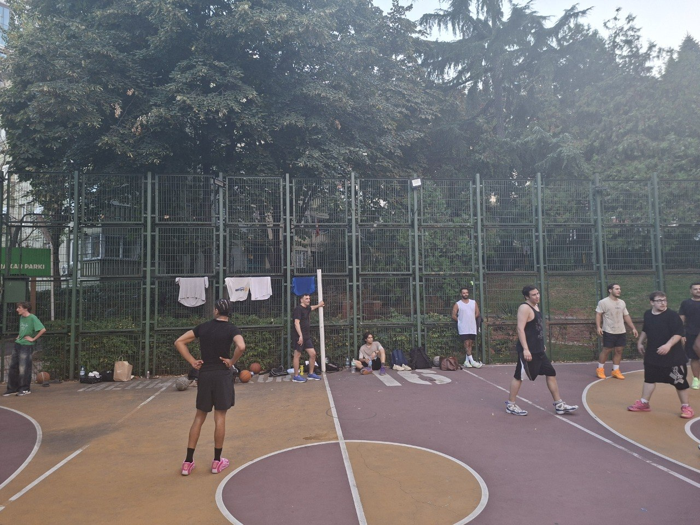
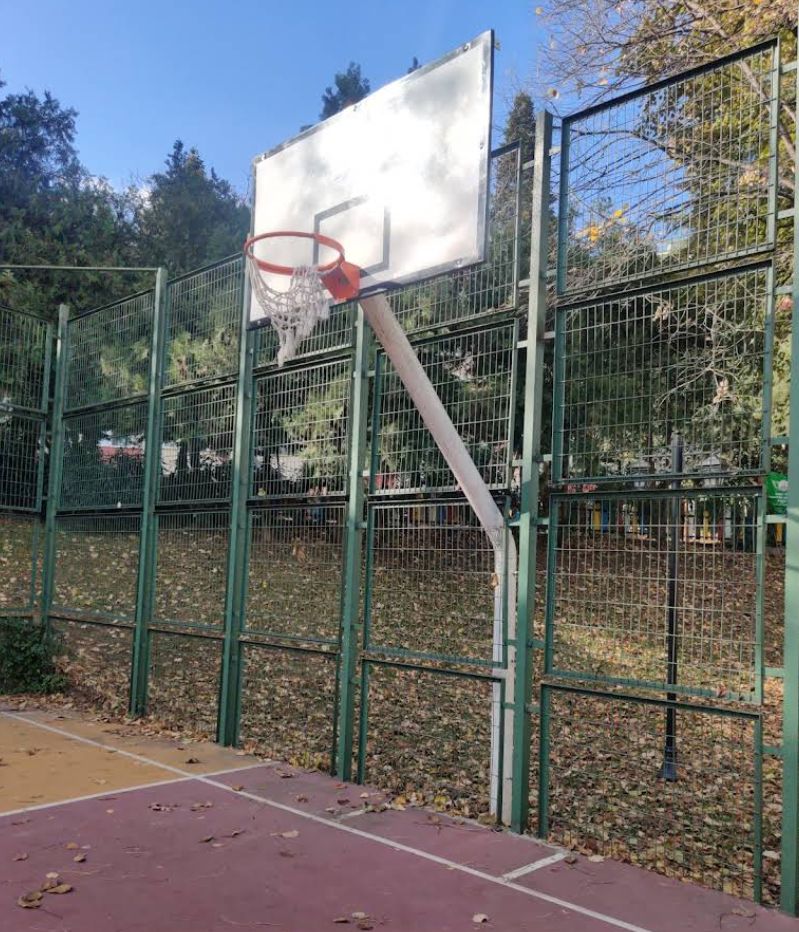
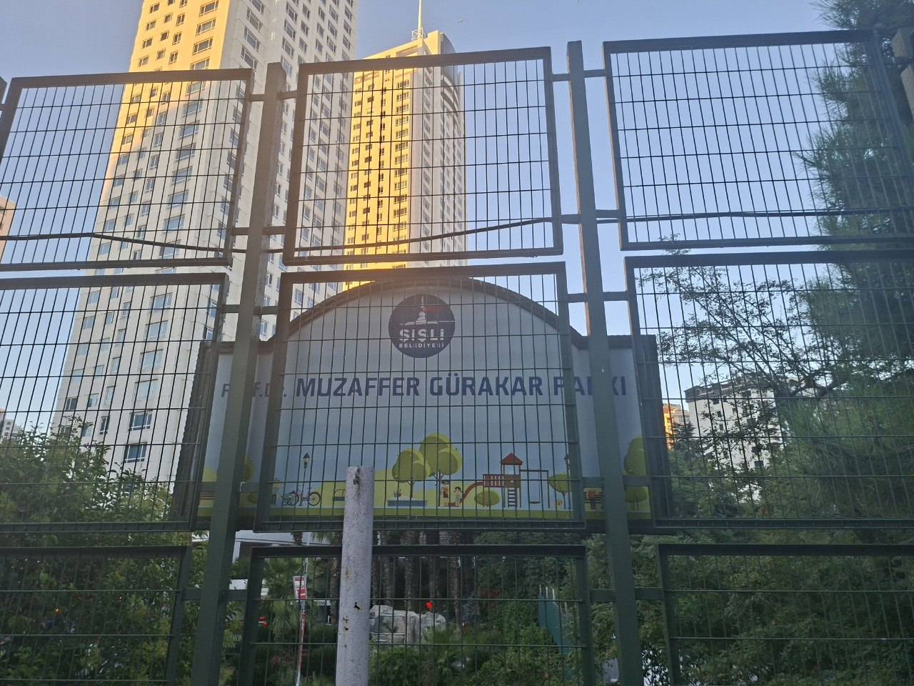

Kimiz Who we are Кто мы Qui sommes-nous ما کی هستیم
Ihlamur Sitesi parkındaki sahada buluşan bir grup oyuncuyuz. Lig yok, hakem yok, aidat yok. İlkbahardan sonbahara kadar hemen her gün oynanır. Organizasyon bir WhatsApp grubundan yürür — ama üyelik oradan değil, sahadan geçer. We're a group of players who meet at the Ihlamur Sitesi park court. No league, no referee, no fees. Games run almost every day from spring to fall. Organization happens in a WhatsApp group — but membership isn't granted there, it's earned on the court. Мы — компания игроков, которая собирается на площадке в парке Ihlamur Sitesi. Ни лиги, ни судьи, ни взносов. Играем почти каждый день с весны до осени. Всё держится на группе в WhatsApp — но место в ней не выдают там, его зарабатывают на площадке. Nous sommes un groupe de joueurs qui se retrouvent sur le terrain du parc Ihlamur Sitesi. Pas de ligue, pas d’arbitre, pas de cotisation. On joue presque tous les jours, du printemps à l’automne. Tout s’organise sur un groupe WhatsApp — mais on n’y entre pas par la porte du groupe, on y entre par le terrain. ما گروهی از بازیکنانیم که در زمین پارک ایهلامور سیتهسی جمع میشویم. نه لیگی، نه داوری، نه حق عضویتی. از بهار تا پاییز تقریباً هر روز بازی هست. هماهنگی در یک گروه واتساپ انجام میشود — اما عضویت از آنجا به دست نمیآید، بلکه در زمین کسب میشود.
Nasıl katılırsın? Gelirsin. Oynarsın. Adam gibi davranırsın. Bu kadar. How do you join? You show up. You play. You act right. That's it. Как влиться? Приходишь. Играешь. Ведёшь себя как человек. Вот и всё. Comment nous rejoindre ? Tu viens. Tu joues. Tu te tiens bien. C’est tout. چطور ملحق میشوی؟ میآیی. بازی میکنی. درست رفتار میکنی. همین.
Sahadan From the court С площадки Sur le terrain از زمین

Saha kuralları Court rules Правила площадки Règles du terrain قوانین زمین
- Kazanan kalır. Sahayı kazanarak tutarsın, konuşarak değil. Winner stays. You hold the court by winning, not by talking. Победитель остаётся. Площадку удерживают победами, а не разговорами. Le gagnant reste. On garde le terrain en gagnant, pas en parlant. برنده میماند. زمین را با بردن نگه میداری، نه با حرف زدن.
- Üst üste 3 galibiyet tavandır. 3 maç arka arkaya kazanan takım, kazanmış olsa bile sahayı bırakır. Three straight is the cap. Win 3 in a row and you step off, even as winners. Три победы подряд — потолок. Выиграл три матча подряд — уступаешь площадку, даже будучи победителем. Trois victoires d’affilée, c’est le plafond. Gagne 3 matchs de suite et tu laisses le terrain, même en vainqueur. سه برد پیاپی، سقف است. تیمی که ۳ بازی پشتسرِهم ببرد، حتی با وجود برد، زمین را واگذار میکند.
- 11 sayıya oynanır. Birler ve ikiler (üçlük = 2 sayı), 2 sayı farkla kazanılır. Games to 11. Ones and twos (a "three" counts 2), win by 2. Играем до 11. Очки по одному и по два (дальний бросок — 2), победа с разницей в 2. Matchs en 11 points. À un et deux points (le tir derrière l’arc vaut 2), il faut 2 points d’écart. بازی تا ۱۱ امتیاز. تک و دو امتیازی (پرتاب پشتِ خطِ سه = ۲ امتیاز)، برد با اختلاف ۲ امتیاز.
- Top kontrol (check). Başlangıçta ve her fauldan sonra top üstten kontrol edilir. Çalınan, blok yenen, dışarı çıkan her topta üç sayı çizgisinin arkasına çıkılır. Check ball. Check at the top to start and after every foul. Take it back behind the arc on every change of possession — steals, blocks, boards. Мяч на «check». В начале и после каждого фола мяч разыгрывают с верха дуги. При любой смене владения — перехват, блок, подбор — мяч выносят за трёхочковую линию. Le « check ». On check en haut de la raquette au début et après chaque faute. À chaque changement de possession — interception, contre, rebond — on ressort derrière l’arc. check توپ. در شروع و بعد از هر خطا، توپ از بالای قوس check میشود. در هر تغییرِ مالکیت — توپربایی، بلاک، ریباند — باید توپ را به پشتِ خطِ سه برگردانی.
- Faulü hücum söyler — dürüstçe. Ucuz faul çalınmaz, her pozisyon tartışılmaz. Offense calls its own fouls — honestly. No weak calls, and don't argue every single possession. Фолы объявляет нападение — честно. Никаких дешёвых фолов и споров на каждом владении. C’est l’attaque qui siffle ses fautes — honnêtement. Pas de fautes bidon, et on ne conteste pas chaque possession. خطا را تیمِ مهاجم اعلام میکند — صادقانه. خطای الکی نگیر و سرِ هر توپ بحث نکن.
- Top yalan söylemez. Tartışmalı pozisyonda savunma "top için atar" — girerse onların, girmezse hücumun. Ball don't lie. On a disputed call, the defense shoots for it — make it, their ball; miss it, offense keeps it. Ball don't lie. В спорном моменте защита бросает «на мяч» — попал, мяч их; промах — мяч остаётся у нападения. Ball don’t lie. Sur une action litigieuse, la défense tire « pour la balle » — réussi, c’est leur balle ; manqué, l’attaque la garde. Ball don't lie. در موقعیتِ جنجالی، تیمِ دفاع «برای توپ» پرتاب میکند — گل شد توپ مالِ آنها، نشد توپ برای مهاجم میماند.
- "Sıra bizde" de. Bir sonraki maça çıkmak için sıranı sözlü olarak al; sıraya saygı göster. Call "next." Claim the next game out loud, then respect the queue. Говори «next». Займи очередь на следующую игру вслух и уважай очередь. Annonce « next ». Réserve le prochain match à voix haute, puis respecte la file. بگو «next». نوبتت را برای بازیِ بعدی با صدای بلند اعلام کن و به نوبت احترام بگذار.
- Tehlikeli faul yok. Asla. Rakibi sakatlama riski taşıyan hareket, hoş geldin hakkını en hızlı kaybettiren şeydir. No dangerous fouls. Ever. A play that risks injuring someone is the fastest way to lose your welcome. Никаких опасных фолов. Никогда. Приём, грозящий травмой сопернику, — самый быстрый способ лишиться места в компании. Aucune faute dangereuse. Jamais. Un geste qui risque de blesser quelqu’un est le moyen le plus rapide de ne plus être le bienvenu. خطای خطرناک ممنوع. هیچوقت. حرکتی که خطرِ مصدومکردنِ حریف را دارد، سریعترین راهِ از دست دادنِ جایگاهت اینجاست.
Adab The code Кодекс Le code آداب
- Yeni geleni içeri al. Bir zamanlar sen de yeniydin. Welcome the newcomer. You were new once too. Прими новичка. Ты и сам когда-то был новеньким. Accueille le nouveau. Toi aussi, tu l’as été un jour. تازهوارد را بپذیر. تو هم روزی تازهوارد بودی.
- Sert oyna, ucuz oynama. Fark, saygıda saklıdır. Play hard, don't play cheap. The difference is respect. Играй жёстко, но не грязно. Разница — в уважении. Joue dur, pas déloyal. La différence, c’est le respect. محکم بازی کن، نه ناجوانمردانه. تفاوت در احترام است.
- Tartışmayı sahada bırak. Maç biter, husumet bitmez ama taşınmaz. Leave the argument on the court. The game ends; grudges don't travel. Оставь спор на площадке. Игра кончается; обиды с собой не уносят. Laisse la dispute sur le terrain. Le match finit ; les rancunes ne suivent pas. بحث را در زمین رها کن. بازی تمام میشود؛ کینه را با خود نبر.
- Parka sahip çık. Çöpünü topla, sahayı geldiğinden temiz bırak. Look after the park. Take your trash; leave the court cleaner than you found it. Береги парк. Убери за собой мусор; оставь площадку чище, чем застал. Prends soin du parc. Ramasse tes déchets ; laisse le terrain plus propre qu’à ton arrivée. مراقبِ پارک باش. زبالهات را جمع کن؛ زمین را تمیزتر از آنچه دیدی رها کن.

Bize katıl Find us Как нас найти Nous trouver ما را پیدا کن
Prof. Dr. Muzaffer Gürakar Parkı (Ihlamur Sitesi yanı), Fulya–Şişli, İstanbul. Sezon: ilkbahar–sonbahar, her gün. Katılmak için: sahaya gel, oyna, centilmen ol. WhatsApp grubuna davet mi istiyorsun? Sahadaki herhangi birine sor. Sırrımız yok — sadece adabımız var. Prof. Dr. Muzaffer Gürakar Parkı (next to Ihlamur Sitesi), Fulya–Şişli, Istanbul. Season: spring–fall, daily. To join: come to the court, play, be a gentleman. Want the WhatsApp invite? Ask anyone on the court. No secret handshake — just a code of conduct. Парк им. проф. д-ра Музаффера Гюракара (рядом с Ihlamur Sitesi), Фулья–Шишли, Стамбул. Сезон: с весны до осени, каждый день. Чтобы влиться: приходи на площадку, играй, веди себя достойно. Нужен инвайт в WhatsApp? Спроси любого на площадке. Никаких тайных знаков — только кодекс поведения. Parc Prof. Dr. Muzaffer Gürakar (à côté d’Ihlamur Sitesi), Fulya–Şişli, Istanbul. Saison : du printemps à l’automne, tous les jours. Pour nous rejoindre : viens sur le terrain, joue, sois un gentleman. Tu veux l’invitation WhatsApp ? Demande à n’importe qui sur le terrain. Pas de code secret — juste un code de conduite. پارکِ پروفسور دکتر مظفر گوراکار (کنارِ ایهلامور سیتهسی)، فولیا–شیشلی، استانبول. فصل: از بهار تا پاییز، هر روز. برای ملحق شدن: به زمین بیا، بازی کن، جنتلمن باش. دعوتنامهٔ واتساپ میخواهی؟ از هر کسی در زمین بپرس. رمزِ مخفیای در کار نیست — فقط آدابِ رفتار.

Yol tarifi → Get directions → Проложить маршрут → Itinéraire → مسیریابی ←
Görüşürüz sahada. See you on the court. Увидимся на площадке. On se voit sur le terrain. در زمین میبینیمت.